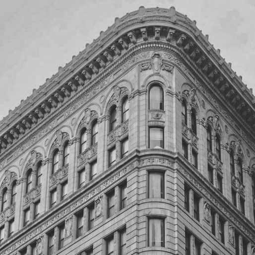
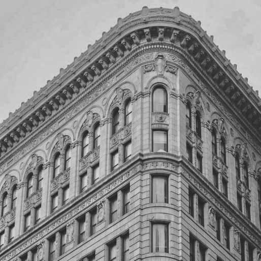
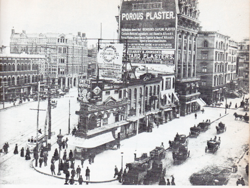
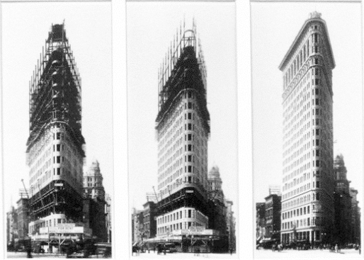
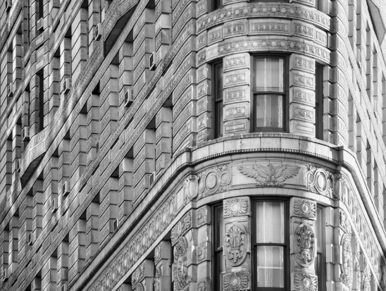

Flatiron
История строительства
расположенный на Манхэттене
Flatiron
Building

Название «Утюг» (Flatiron) происходит из-за очевидного сходства клиновидного здания с этим бытовым прибором.

ток
Участок
Участок
Уча
на котором будет стоять Флэтайрон-билдинг, был куплен в 1857 году американским инвестором в недвижимость Амосом Ино.
В течение своей жизни Ино сопротивлялся предложениям продать «Утюг Ино»,
после его смерти участок был куплен строительной компанией Fuller, которая хотела расположить в этом месте свой новый офис.
Для проектирования здания были приглашены известные чикагские архитекторы
Дэниел
Бёрнем
и
Фредерик
Дилкенберг
Работы по возведению небоскрёба были начаты в середине 1901 года
Рост здания составлял один этаж в неделю.
Полностью строительство было завершено
в июне 1902 года, спустя всего год после начала.
Full
Изначально небоскрёбу было дано название «Фуллер-билдинг»,
однако из-за ассоциаций, которые
у горожан вызывала форма здания, оно не прижилось.
uller
тюг
Утюг
Утюг
Утюг
Утюг
Получил смешанные отзывы от современников. Многие не оценили новый небоскреб.
К примеру,
нелестно отозвался о небоскрёбе Максим Горький, приехавший сюдав 1906 году.
«Это — город, это — Нью-Йорк. На берегу стоят двадцатиэтажные дома, безмолвные и темные “скребницы неба”. Квадратные, лишенные желания быть красивыми, тупые, тяжелые здания поднимаются вверх угрюмо и скучно...»
С другой стороны,
американский журналист Джон Корбин разглядел
в небоскрёбе, доминирующем над Мэдисон-сквером,
«океанский пароход, тянущий на буксире Бродвей».
Акты
Факты
Факты
Факты
Орнамент небоскрёба выполнен в основном в стиле итальянского ренессанса.
В оформлении колонн в самой узкой части Флэтайрона, ориентированной на север, прослеживается французский ренессанс.
В здании располагалось консульство Российской империи.
Сходящиеся под острым углом стены небоскрёба в ветреную погоду действуют подобно аэродинамической трубе,
создавая мощные завихрения.
ДИЗАЙН:
Ханеева Лия
e-mail: liyahaneeva@gmail.com
instagram: @leahkhaneeva